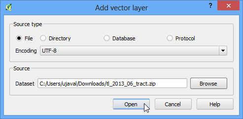
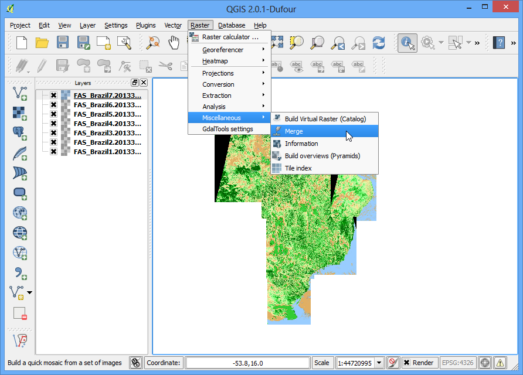
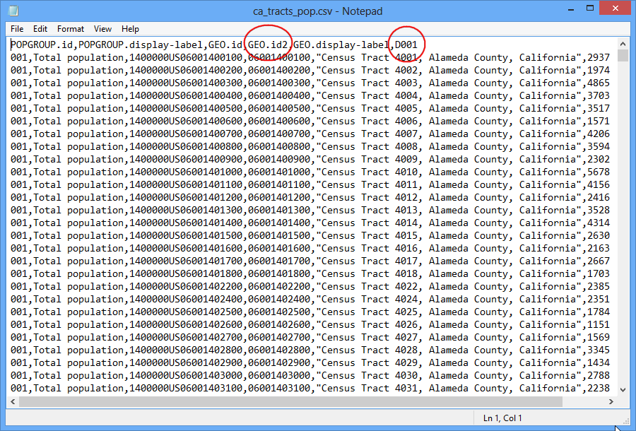
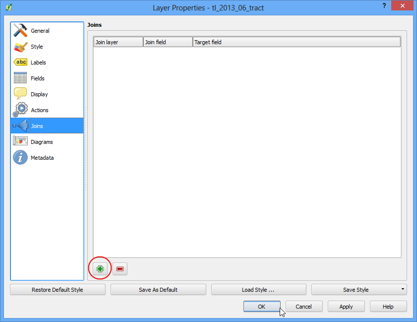

Nearest Neighbor Analysis
[ Download PDF A4 Letter ]
GIS is very useful in analyzing spatial relationship between features. One such
analysis is finding out which features are closest to a given feature. QGIS has
a tool called Distance Matrix which helps with such analysis. In this
tutorial, we will use 2 datasets and find out which points from one layer are
closest to which point from the second layer.
Overview of the task
Given the locations of all known significant earthquakes, find out the nearest
populated place for each location where the earthquake happened.
Other skills you will learn
Procedure
- Open and browse to the
downloaded signif.txt file.

- Since this is a tab-delimited file, choose Tab as the
File format. The X field and Y field
would be auto-populated. Click OK.
Nota
You may see some error messages as QGIS tries to import the file. These are
valid errors and some rows from the file will not be imported. You can ignore
the errors for the purpose of this tutorial.

- As the earthquake dataset has Latitude/Longitude coordinates, choose
WGS 84 EPSG:436 as the CRS in the Coordinate Reference System Selector
dialog.

- The earthquake point layer would now be loaded and displayed in QGIS. Let’s
also open the Populated Places layer. Go to .

- Browse to the downloaded ne_10m_populated_places_simple.zip file and
click Open. Select the ne_10m_populated_places_simple.shp as
the layer in the Select layers to add... dialog.

- Zoom around and explore both the datasets. Each purple point represents the
location of a significant earthquake and each blue point represents the
location of a populated place. We need a way to find out the nearest point
from the populated places layer for each of the points in the earthquake
layer.

- Go to .

- Here select the earthquake layer signif as the Input point layer and the populated
places ne_10m_populated_places_simple as the target layer. You also need
to select a unique field from each of these layers which is how your results
will be displayed. In this analysis, we are looking to get only 1 nearest
point, so check the Use only the nearest(k) target points, and
enter 1. Name your output file matrix.csv, and click OK.
Nota
A useful thing to note is that you can even perform the analysis with only 1
layer. Select the same layer as both Input and Target. The result would be a
nearest neighbor from the same layer instead of a different layer as we have
used here.

- Once your file is generated, you can view it in Notepad or any text editor.
QGIS can import CSV files as well, so we will add it to QGIS and view it
there. Go to .

- Browse to the newly created matrix.csv file. Since this file is just
text columns, select No geometry (attribute only table) as the
Geometry definition. Click OK.

- You will see the CSV file loaded as a table. Right-click on the table layer
and select Open Attribute Table.

- Now you will be able to see the content of our results. The InputID
field contains the field name from the Earthquake layer. The TargetID
field contains the name of the feature from the Populated Places layer that was
the closest to the earthquake point. The Distance field is the distance
between the 2 points.
Nota
Remember that the distance calculation will be done using the layers’
Coordinate Reference System. Here the distance will be in decimal degrees
units because our source layer coordinates are in degrees. If you want
distance in meters, reproject the layers before running the tool.

- This is very close to the result we were looking for. For some users, this
table would be sufficient. However, we can also integrate this results in
our original Earthquake layer using a Table Join. Right-click on the Earthquake
layer, and select Properties.

- Go to the Joins tab and click on the + button.

- We want to join the data from our analysis result (matrix.csv) to this
layer. We need to select a field from each of the layers that has the same
values. Select the fields as shown below.

- You will see the join appear in the Joins tab. Click
OK.

- Now open the attribute table of the Earthquakes layer by right-clicking and
selecting Open Attribute Table.

- You will see that for every Earthquake feature, we now have an attribute
which is the nearest neighbor (closest populated place) and the distance to
the nearest neighbor.